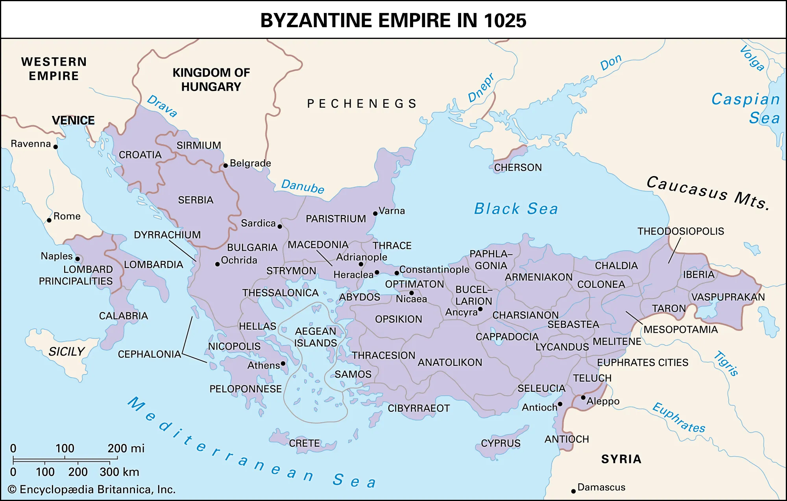

1025Apogeu sob Basílio II
A morte de Basílio II, em 1025, encerra o reinado de maior expansão territorial do império desde Justiniano. A Bulgária foi anexada e as fronteiras nunca estiveram tão extensas, mas a ausência de um herdeiro forte abre uma fragilidade que será sentida nas décadas seguintes.
Ameaças Internas
- Falta de herdeiro direto e fragilidade na sucessão dinástica
- Crescimento do poder dos "dynatoi" (grandes aristocratas latifundiários)
- Tensão entre a burocracia civil de Constantinopla e a aristocracia militar das províncias
Ameaças Externas
- Resistência residual de populações búlgaras recém-anexadas
- Incursões de tribos pechenegues nas fronteiras do Danúbio
- Tensões latentes com o Califado Fatímida no Oriente Médio